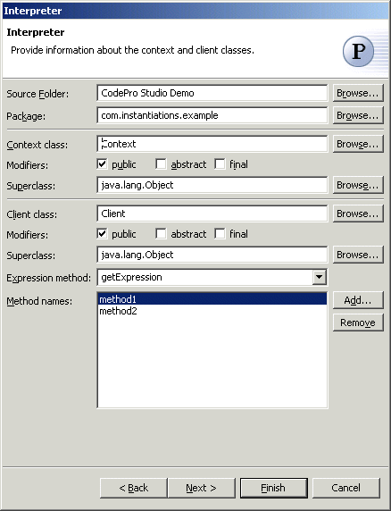
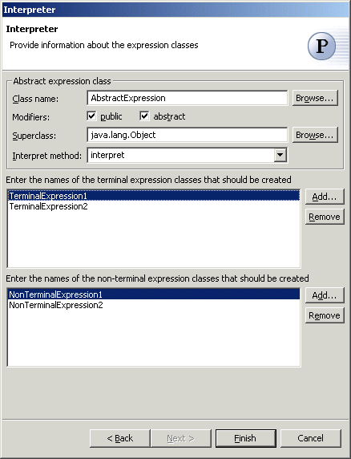

Interpreter Pattern
Given a language, the  Interpreter Pattern defines a representation for its grammar along with an
interpreter that uses the representation to interpret sentences in the
language. If a particular kind of problem occurs often enough, then it might
be worthwhile to express instances of the problem as sentences in a simple
language. Then you can build an interpreter that solves the problem by
interpreting these sentences. The Interpreter pattern describes how to
define a grammar for simple languages, represent sentences in the language,
and interpret these sentences.
Interpreter Pattern defines a representation for its grammar along with an
interpreter that uses the representation to interpret sentences in the
language. If a particular kind of problem occurs often enough, then it might
be worthwhile to express instances of the problem as sentences in a simple
language. Then you can build an interpreter that solves the problem by
interpreting these sentences. The Interpreter pattern describes how to
define a grammar for simple languages, represent sentences in the language,
and interpret these sentences.
Wizard

| Option | Description | Default |
| Source folder | Enter a source folder for the new class. Either type a valid source folder path or click Browse to select a source folder via a dialog. | The source folder of the element that was selected when the wizard was started. |
| Package | Enter a package to contain the new class. Either type a valid package name or click Browse to select a package via a dialog. | The package of the element that was selected when the wizard has been started. |
| Context class | Type or click Browse to select a context class. | <Context> |
| Modifiers | Select one or more access modifiers for the new class.
|
public |
| Superclass | Type or click Browse to select a superclass for the context class. | <java.lang.Object> |
| Client class | Type or click Browse to select a client class. | <Client> |
| Modifiers | Select one or more access modifiers for the new class.
|
public |
| Superclass | Type or click Browse to select a superclass for the client class. | <java.lang.Object> |
| Expression method | Type or select the name of the method that will return the expression | <getExpression> |
| Method names | Click Add to enter names of sample methods that should be created in the client class | <blank> |

| Option | Description | Default |
| Abstract expression | Type or click Browse to select a abstract expression class. | <AbstractExpressiob> |
| Modifiers | Select one or more access modifiers for the new class.
|
public |
| Superclass | Type or click Browse to select a superclass for the abstract expression class. | <java.lang.Object> |
| Interpret method | Type or select the name of the method that will interpret the expression | <interpret> |
| Terminal expression classes | Click Add to enter names of terminal expression classes that should be created. | <blank> |
| Non-terminal expression classes | Click Add to enter names of non-terminal expression classes that should be created. | <blank> |
Applicability
Use the Interpreter pattern when there is a language to interpret, and you can represent statements in the language as abstract syntax trees. The Interpreter pattern works best when
- the grammar is simple. For complex grammars, the class hierarchy for the grammar becomes large and unmanageable. Tools such as parser generators are a better alternative in such cases. They can interpret expressions without building abstract syntax trees, which can save space and possibly time.
- efficiency is not a critical concern. The most efficient interpreters are usually not implemented by interpreting parse trees directly but by first translating them into another form. For example, regular expressions are often transformed into state machines. But even then, the translator can be implemented by the Interpreter pattern, so the pattern is still applicable.
Additional Resources
http://c2.com/cgi/wiki?InterpreterPattern
http://www.wikipedia.org/wiki/Interpreter_pattern
http://www.cmcrossroads.com/bradapp/javapats.html#Interpreter